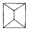
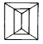
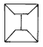
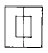

건축설비산업기사 (2002-09-08 기출문제)
1과목: 건축일반
1. 도서관에서 500명의 성인을 수용할 수 있는 다인용 일반 열람실의 적당한 면적은?
- 1,000m2
- 1,500m2
- 2,000m2
- 2,500m2
(정답률: 28%)

2. 기초판의 형식에 의한 분류로 볼 수 없는 것은?
- 독립기초
- 직접기초
- 복합기초
- 연속기초
(정답률: 알수없음)
3. 지붕 평면형태 중 합각지붕은 어느 것인가?




(정답률: 알수없음)
4. 연약한 지반의 기초 및 대책에 있어서 상부구조 관계에서 틀린 것은?
- 강성을 높일 것
- 건물의 중량화
- 건물의 중량 분배를 고려할 것
- 평면 길이를 작게할 것
(정답률: 54%)
5. 구조물이 부동침하되는 원인이 아닌 것은?
- 건축물이 이질지층에 있는 경우
- 지하수위가 변경되었을 경우
- 기둥, 기초의 배근량이 부족하게 되었을 경우
- 구조물이 낭떠러지에 접근하여 있을 경우
(정답률: 62%)
6. 다음 중 보통석회라 함은 어느 것을 말하는가?
- 백시멘트
- 석고
- 생석회
- 소석회
(정답률: 40%)
7. 철근콘크리트 기둥의 배근에 대한 설명 중 가장 거리가 먼 것은?
- 철근비는 콘크리트강도에 따라 다르다.
- 이음위치는 층 높이의 2/3 이상에 둔다.
- 띠철근은 지름 6mm 이상의 철근을 사용한다.
- 주근은 다각형 기둥에서는 6개 이상으로 한다.
(정답률: 34%)
8. 알루미늄새시에 관한 설명으로 틀린 것은?
- 무게는 철제의 약 1/3로 가볍다.
- 접촉면의 재료와 관계없이 시공할 수 있다.
- 보조철물은 알루미늄 피복을 해야 좋다.
- 비나 바람의 틈새가 적다.
(정답률: 39%)
9. 실내음향설계에 관한 주의사항 중 적당하지 않은 것은?
- 방해가 되는 소음이나 진동을 완전히 차단하도록 한다.
- 직접음과 반사음의 시간차이를 가능한한 크게하여 충분한 음의 보강이 되도록 한다.
- 강연이나 연극 등 언어를 주 사용목적으로 할 경우 잔향시간은 비교적 짧게 처리한다.
- 실의 어느 위치에서나 음의 분포가 균등하도록 한다.
(정답률: 60%)
10. 연립주택 배치시 프라이버시를 위한 시각 적정거리로 적당한 것은?
- 약 10m 정도
- 약 15m 정도
- 약 20m 정도
- 약 25m 정도
(정답률: 알수없음)
11. 다음 중 측면판매(側面販賣)의 장점이 아닌 것은?
- 상품이 손에 잡혀서 충동 구매가 이루어 진다.
- 선택이 용이하다.
- 진열면적이 커지고 상품에 친근감이 있다.
- 포장이 편리하다.
(정답률: 알수없음)
12. 상점의 평면배치의 기본형으로 거리가 먼 것은?
- 굴절배열형
- 직렬배열형
- 복합형
- 나선배열형
(정답률: 58%)
13. 숙박관계 부분의 면적이 연면적에서 차지하는 비율이 가장 큰 호텔은?
- 레지덴셜호텔
- 커머셜호텔
- 아파트먼트호텔
- 터미널호텔
(정답률: 알수없음)
14. 종합병원 계획에 대한 설명 중 잘못된 것은?
- 수술실 벽은 녹색계통으로 한다.
- 병동부의 한 간호단위는 30-40 병상이 적당하다.
- 중환자실, 회복실, 수술실은 각각 층을 달리하는 것이 좋다.
- 외래, 입원, 구급기능의 출입은 분리하는 것이 좋다.
(정답률: 알수없음)
15. 병동배치에서 분관식이 집중식보다 유리한 점에 해당되는 것은?
- 각 병실마다 고르게 일조를 얻을 수 있다.
- 설비의 배관길이가 짧게 된다.
- 관리가 편하고 동선이 짧게 된다.
- 대지가 협소해도 가능하다.
(정답률: 알수없음)
16. 철근콘크리트구조에서 배근 최소 간격을 결정하는 기준으로 맞지 않는 것은?
- 최대 자갈지름의 1.25배 이상
- 주근 지름의 1.5배 이상
- 거푸집과 주근 간격의 2배 이상
- 2.5cm 이상
(정답률: 60%)
17. 철근 콘크리트구조의 보 양단부에 늑근을 많이 배치하는 이유로 가장 중요한 것은?
- 콘크리트의 강도를 보다 높이기 위하여
- 보에 일어나는 전단력에 저항하기 위하여
- 보에 일어나는 휨 모멘트에 대항하기 위하여
- 철근과 콘크리트의 부착력을 증가시키기 위하여
(정답률: 45%)
18. 울거미를 짜고 그 중간에 가는살을 20cm간격으로 가로, 세로로 짜내고 종이를 두껍게 바른 문은?
- 양판문
- 도듬문
- 플러시문
- 세살문
(정답률: 알수없음)
19. 조적조에 있어서 통줄눈을 피하는 이유로 옳은 것은?
- 시공을 쉽게 하기 위하여
- 인장력을 높이기 위하여
- 모르타르위 부착강도를 높이기 위하여
- 상부에서 오는 하중의 응력을 분산하기 위하여
(정답률: 알수없음)
20. 조명에 악센트를 주며 상품 전시를 대상으로 하여 스포트라이트가 사용되는 조명은?
- 직접조명
- 간접조명
- 국부조명
- 반 간접 조명
(정답률: 100%)
2과목: 위생설비
21. 방재설비 중 소방차의 소방펌프로 물을 옥내에 송수하기 위해 건물 외부에 설치하는 접속구는?
- 드렌처(drencher)
- 사이어미즈 커넥션(siamese connection)
- 디텍터(detector)
- 프리액션 밸브(preaction valve)
(정답률: 19%)
22. 급수 배관내에 공기실(air chamber)을 설치하는 이유는?
- 수압시험을 위하여
- 배관에 구배를 갖기 위하여
- 수격작용을 방지하기 위하여
- 배수계통을 설치하기 위하여
(정답률: 알수없음)
23. 급탕배관계통 중 총손실열량이 10,000[kcal/h]일 때 순환수량은 몇 [ℓ /min]인가 ? (급탕온도는 60℃, 반탕온도는 55℃이다.)
- 3.3
- 33.3
- 200
- 2,000
(정답률: 알수없음)
24. 급탕설비에서 간접가열식에 대한 설명 중 옳지않은 것은?
- 저탕조내에 가열코일이 설치되어 있다.
- 저탕조에 자동온도조절기가 설치되어 있다.
- 고압보일러가 필요하다.
- 대규모 급탕설비에 적합하다.
(정답률: 72%)
25. 일반적으로 급수관내의 유속은 얼마 이하가 되도록 계획 하는가?
- 0.5 m/sec
- 1.0 m/sec
- 2.0 m/sec
- 3.0 m/sec
(정답률: 65%)
26. 임펠라(impeller)를 직렬로 장치하여 단단, 2단, 3단 등으로 고양정을 얻을 수 있는 펌프는?
- 왕복펌프
- 원심펌프
- 제트펌프
- 기포펌프
(정답률: 알수없음)
27. 통기관의 말단과 건물 개구부의 위치 관계에서 통기관의 말단을 개구부 및 외기 도입구 상단에서 얼마 이상 입상 시키는가?
- 30㎝ 이상
- 60㎝ 이상
- 80㎝ 이상
- 90㎝ 이상
(정답률: 알수없음)
28. 배수 통기관(vent pipe)의 배관 설치에 관한 설명으로 옳지 못한 것은?
- 바닥 아래의 통기관은 가능한 금지해야 한다.
- 통기수직관과 빗물관은 겸용해서는 안된다.
- 싱크대가 연합으로 2개 설치시 2중트랩을 설치한다.
- 대변기 배수관이 수평지관과 연결시 직각보다는 Y 형 연결이 좋다.
(정답률: 알수없음)
29. 고가수조방식에서 최상층의 수압을 확보하기 위해 물탱크 높이를 올리려고 한다. 최상층 수전에서 고가수조 최저 수위까지의 최저 높이는 ? (단, 최상층 수전의 필요수압 0.7kg/㎝2. 배관의 마찰손실 1m)
- 7 m
- 8 m
- 10 m
- 17 m
(정답률: 알수없음)
30. 원수에 공기를 공급하여 수중의 철, 망간 혹은 냄새를 제거하는 수처리 방법은?
- 폭기
- 침전
- 여과
- 소독
(정답률: 34%)
31. 도시가스의 공급계통에서 압력 조정의 목적으로 이용되는 설비는?
- 압축기
- 홀더
- 거버너
- 계량기
(정답률: 37%)
32. 입관에 접근하여 기구를 설치할 경우에 입관 상부에서 일시에 다량의 물이 낙하하면 그 입관과 횡관과의 연결부부근에 순간적으로 진공이 생길때가 있어 그 결과 트랩내의 물을 흡입하는 트랩의 파괴 현상은?
- 자기사이펀 작용
- 모세관 현상
- 분출 작용
- 유인사이펀 작용
(정답률: 40%)
33. 급수설비설계시 사용되는 마찰저항선도에 나타나 있지 않은 항목은?
- 유속
- 유량
- 관경
- 기구급수부하단위
(정답률: 67%)
34. 혐기성(嫌氣性) 미생물에 의해 오수가 생물학적 처리가되는 곳은?
- 폭기조
- 부패조
- 살수조
- 산화조
(정답률: 82%)
35. 펌프설치시 유효흡입양정을 고려하는 이유는?
- 서어징을 방지하기 위해서이다.
- 캐비테이션을 방지하기 위해서이다.
- 고 양정을 얻기 위해서이다.
- 대 유량을 얻기 위해서이다.
(정답률: 알수없음)
36. 펌프의 특성이 아닌 것은?
- 펌프의 축동력은 회전수의 제곱에 비례하여 증가 또는 감소한다.
- 흡입양정이 높아질수록 펌프의 성능은 나빠진다.
- 펌프는 회전수에 따라 양수량이 크게 변동한다.
- 양정은 회전수 변화의 제곱에 비례해서 감소 또는 증가한다.
(정답률: 25%)
37. 버큠 브레이커(Vaccum breaker)는 어느 방식의 대변기에 부착하여 사용되는가?
- 하이탱크식
- 세정밸브식
- 사이펀방식
- 로우탱크식
(정답률: 46%)
38. 관경이 100㎜, 길이가 50m인 동관으로 된 급탕 횡주관에 급탕이 공급되어 관의 온도가 10℃에서 90℃까지 온도가 상승된 경우 배관의 증가길이는? (단, 동의 선팽창율 α =1,66×10-5이다.)
- 0.66㎝
- 6.64㎝
- 0.747㎝
- 7.47㎝
(정답률: 알수없음)
39. 음료용 급수관으로 사용이 곤란한 관은?
- 스테인리스관
- 동관
- 아연도금강관
- 플라스틱관
(정답률: 43%)
40. 스프링클러헤드의 동시 최대 개구수가 20개일때 급수원의 저수량은 얼마 이상으로 하는가?
- 16m3
- 20m3
- 32m3
- 41m3
(정답률: 40%)
3과목: 공기조화설비
41. 극간풍 방지대책 중 적절하지 못한 것은 어느 것인가?
- 회전문을 설치한다.
- 에어커튼을 설치한다.
- 이중문의 중간에 강제 대류 컨벡터를 설치한다.
- 단열을 강화한다.
(정답률: 55%)
42. 증기난방에서 방열기면적 EDR=2,000m2, 급탕량6,000ℓ /h일 때 주철보일러의 정격출력은 얼마인가?(단, 급탕은 1ℓ 당 60kcal가 소요되며 정격출력은 정미출력의 35% 증가로 본다.)
- 360,000 kcal/h
- 1,300,000 kcal/h
- 1,660,000 kcal/h
- 2,241,000 kcal/h
(정답률: 24%)
43. 공기조화 방식 중 열매체의 운송동력이 가장 크게 소요되는 것은?
- 냉매방식
- 팬코일 유닛방식
- 단일덕트방식
- 덕트병용 팬코일 유닛방식
(정답률: 25%)
44. 자연환기를 시키기 위한 급기구와 배기구의 설치위치로서 가장 적당한 것은?
- 급기구 및 배기구를 모두 낮은곳에 설치
- 급기구 및 배기구를 모두 높은곳에 설치
- 급기구는 낮은곳, 배기구는 높은곳에 설치
- 급기구는 높은곳, 배기구는 낮은곳에 설치
(정답률: 알수없음)
45. 온수온돌용 배관재로써 가장 부식성이 큰 것은?
- 동관
- 강관
- 스테인레스관
- 고밀도 폴리에틸렌관
(정답률: 알수없음)
46. 진공환수시에 리프트이음(lift fitting) 1단의 흡상 높이는?
- 1.5m 이내
- 2.0m 이내
- 4.5m 이내
- 10.0m 이내
(정답률: 60%)
47. 공조용 냉각 코일이 바이패스 팩터(bypass factor)에 영향을 미치는 요인을 나열한 것이다. 가장 그 영향이 작은 것은?
- 코일의 외표면 열전달율
- 코일의 열수
- 통과공기의 풍속
- 통과공기의 상대습도
(정답률: 25%)
48. 강판제 보일러에서 설치면적이 작고, 설치가 비교적 용이하기 때문에 소규모 난방에 많이 사용되며, 전열면적 30m2, 증기압력 10㎏/㎝2 정도까지의 적합한 보일러로 맞는 것은?
- 랭카샤 보일러
- 입형 보일러
- 수관식 보일러
- 주철제 보일러
(정답률: 알수없음)
49. 유효온도(Effective Temperature)에 대한 설명 중 옳은 것은?
- 건구온도와 습구온도의 평균치
- 일사에 따라 느껴지는 감각온도
- 사람의 기분에 따라 느껴지는 감각온도
- 온도, 습도, 기류에 따라 느껴지는 감각온도
(정답률: 70%)
50. 단열된 덕트내에 공기를 통하게 하고, 여기에 열량 qs와 수분 L을 가한다. 덕트내 입구공기는 G(kg/h), i1(kcal/kg), x1(kg/kg')이고, 출구 공기는 G(kg/h), i2(kcal/kg), x2(kg/kg')일 때, 열평형식이 바른 것은?(단, 물의 엔탈피는 ｉL(kcal/kg)이다.)
- Gi1=qs+LiL+Gi2
- Gi1+qs=LiL+Gi2
- Gi1+qs+LiL=Gi2
- qs+LiL=Gi1+Gi2
(정답률: 25%)
51. 다익형(前曲型)원심송풍기의 선택조건 중 맞지 않는 것은?
- 송풍기의 운전시간이 짧거나 다소 동력비가 증가해도 좋을 때
- 풍량에 비해 요구정압이 현저히 높을 때
- 동일풍량에 대해 송풍기의 크기가 적은 것이 요구될 때
- 동일풍량에 대해 저속운전이 요구될 때
(정답률: 20%)
52. 공조방식중 에너지 절약상 가장 불리한 방식은?
- 팬코일 유니트 방식
- 가변풍량 방식
- 유인유니트 방식
- 멀티죤 유니트 방식
(정답률: 알수없음)
53. 보일러 주변배관에 하트포트접속법이 있는데 이것은 무엇을 목적으로 하는가?
- 보일러의 일정수온유지
- 보일러의 일정압력유지
- 보일러의 안전수면유지
- 보일러의 압력초과방지
(정답률: 알수없음)
54. 재실인원이 20명인 실내의 냉방에 요구되는 외기부하량은 얼마인가?(단, 실내공기의 엔탈피는 13.2 ㎉/㎏, 외기엔탈피는 20.2 ㎉/㎏, 1인당 필요외기량은 25m3/h 이다.)
- 3400 ㎉/h
- 3800 ㎉/h
- 4200 ㎉/h
- 4600 ㎉/h
(정답률: 30%)
55. 2중 효용 흡수식 냉동기의 구성기기로써 적합한 것은?
- 1차 응축기와 2차 응축기
- 저온발생기와 고온발생기
- 저온증발기와 고온증발기
- 1차 흡수기와 2차 흡수기
(정답률: 알수없음)
56. 외주부(perimeter zone)의 부하변동에 가장 효과적으로 대응할 수 있는 공기조화 방식은?
- 팬코일 유닛방식
- 단일 덕트방식
- 각층 유닛방식
- 멀티존 유닛방식
(정답률: 75%)
57. 연료유에 적정량의 물을 연속적으로 첨가하여 연소시키므로써 완전연소를 촉진시키고 공해물질의 발생을 방지하는 집진 방식은?
- 사이클론식
- 물주입식
- 세정식
- 자석식
(정답률: 20%)
58. 물 2kg을 14.5℃에서 15.5℃로 높이는데 필요한 열량은 얼마인가?
- 1 Kcal
- 2 Kcal
- 0.5 Kcal
- 1.5 Kcal
(정답률: 54%)
59. 축류형 취출구에 속하지 않는 것은?
- 노즐
- 펑커루버
- 슬롯트형
- 팬형
(정답률: 47%)
60. 냉방부하 중에서 현열 성분만으로 이루어진 것은?
- 조명 발생열
- 인체 발생열
- 조리용 기기로부터의 발생열
- 도입외기의 열
(정답률: 알수없음)
4과목: 건축설비관계법규
61. 다음 중 소화 활동설비가 아닌 것은?
- 소화용수설비
- 제연설비
- 연결송수관설비
- 비상콘센트설비
(정답률: 25%)
62. 비상용 승강기를 설치해야 되는 건축물은?
- 높이 41m를 넘는 각층을 거실의 용도로 쓰는 건축물
- 높이 41m를 넘는 각층의 바닥면적의 합계가 500m2 이하인 건축물
- 높이 41m를 넘는 층수가 4개층 이하로서 당해 각층의 바닥면적의 합계 200m2 이내마다 방화구획으로 구획한 건축물
- 높이 41m를 넘는 층수가 4개층 이하로서 실내에 접하는 부분의 마감을 불연재료로 한 경우에는 500m2이내 마다 방화구획으로 구획한 건축물
(정답률: 알수없음)
63. 바닥면적의 합계가 5천제곱미터 이상인 경우 공개공지 또는 공개공간의 설치가 의무화된 건축물의 용도가 아닌것은?
- 의료시설
- 숙박시설
- 업무시설
- 문화 및 집회시설
(정답률: 알수없음)
64. 소방용수시설의 거리기준으로 옳지 않은 것은?
- 주거지역 100m 이내
- 공업지역 100m 이내
- 녹지지역 100m 이내
- 상업지역 100m 이내
(정답률: 73%)
65. 건축물에 설치하는 굴뚝에 관한 기준 중 가장 부적합한 것은?
- 굴뚝의 옥상돌출부는 지붕면으로부터의 수직거리를 0.5m 이상으로 할 것
- 굴뚝의 상단으로부터 수평거리 1m 이내에 다른 건축물이 있는 경우에는 그 건축물의 처마보다 1m 이상 높게 할 것
- 금속제 또는 석면제 굴뚝으로서 건축물의 지붕속· 반자위 및 가장 아랫바닥밑에 있는 굴뚝의 부분은 금속외의 불연재료로 덮을 것
- 금속제 또는 석면제 굴뚝은 목재 기타 가연재료로부터 15㎝ 이상 떨어져서 설치할 것
(정답률: 59%)
66. 스프링클러헤드의 설치간격에 관한 기술 중 틀린 것은?
- 무대부는 1.7m 이하
- 일반 건축물은 2.3m 이하
- 랙크식창고는 2.5m 이하
- 아파트는 3.2m 이하
(정답률: 10%)
67. 지진에 대한 안전여부를 확인해야 할 건축물의 규모로 옳은 것은?
- 3층 이상이거나 연면적 1,000m2 이상인 건축물
- 기둥과 기둥 사이의 거리가 10m 이상인 건축물
- 층수가 6층 이상과 연면적 10,000m2 이상인 건축물
- 높이가 13m, 처마높이가 9m 이상인 건축물
(정답률: 47%)
68. 건축물을 특별시 또는 광역시에 건축하고자 하는 경우 특별시장 또는 광역시장의 허가를 받아야 하는 건축물의 기준으로 옳은 것은?
- 층수가 11층 이상이거나 연면적의 합계가 100,000m2 이상인 건축물
- 층수가 21층 이상이거나 연면적의 합계가 100,000m2 이상인 건축물
- 층수가 11층 이상이거나 연면적의 합계가 200,000m2 이상인 건축물
- 층수가 21층 이상이거나 연면적의 합계가 200,000m2 이상인 건축물
(정답률: 62%)
69. 피뢰설비에 관한 사항 중 맞는 것은?
- 인하도선 사이의 간격은 60m 이하로 할 것
- 각 인하도선당 1개 이상의 접지극을 지하 2m 이상 매설할 것
- 돌침 설치시 풍하중은 고려치 않음
- 피뢰도선을 알루미늄 재료로 했을 때 단면적은 50㎜2 이상으로 할 것
(정답률: 알수없음)
70. 오수· 분뇨 및 축산 폐수의 처리에 관한 법의 목적에 명시되지 않은 것은?
- 환경오염 감소
- 생활환경 청결
- 국민보건의 향상
- 환경보전
(정답률: 알수없음)
71. 건축물 내부에 설치하는 피난계단의 구조에 대한 설명 중 잘못된 것은?
- 계단실은 창문· 출입구 기타 개구부를 제외한 당해 건축물의 다른 부분과 내화구조의 벽으로 구획할 것
- 계단은 내화구조로 하고 피난층 또는 지상까지 직접 연결되도록 할 것
- 계단실에는 채광이 될 수 있는 창문 등을 설치하거나 예비전원에 의한 조명설비를 할 것
- 계단실 및 반자의 실내에 접하는 부분의 마감(마감을 위한 바탕을 포함)은 난연재료로 할 것
(정답률: 알수없음)
72. 건축 법령상 내화구조로 인정될 수 없는 것은?
- 철근콘크리트조 외벽(비내력벽)의 경우 두께가 7㎝ 이상인 것
- 벽돌조로 벽의 두께가 17㎝이상인 것
- 철근콘크리트조 바닥의 경우 두께가 10㎝이상인 것
- 철재로 보강된 유리블록의 지붕
(정답률: 알수없음)
73. 오수처리시설 및 단독정화조는 처리용량 및 처리인원이 얼마 이상일 때 정기적으로 방류수의 수질을 측정해야 하는가? (순서대로 오수처리시설, 단독정화조)
- 1일 처리용량 100m3, 1일 처리대상인원 1,000인 이상
- 1일 처리용량 200m3, 1일 처리대상인원 1,000인 이상
- 1일 처리용량 100m3, 1일 처리대상인원 2,000인 이상
- 1일 처리용량 200m3, 1일 처리대상인원 2,000인 이상
(정답률: 알수없음)
74. 자동식소화기를 설치하여야 하는 아파트의 층수 기준은?
- 층수가 6층 이상인 것은 6층 이상의 층
- 층수가 11층 이상인 것은 6층 이상의 층
- 층수가 11층 이상인 것은 11층 이상의 층
- 층수가 16층 이상인 것은 전층
(정답률: 알수없음)
75. 관람집회 및 운동시설로서 무대부의 바닥면적이 몇m2 이상이면 제연설비를 설치하여야 하는가?
- 100m2
- 120m2
- 150m2
- 200m2
(정답률: 알수없음)
76. 건축법상 용도분류의 관계가 옳지 않은 것은?
- 위락시설 — 무도학원
- 문화 및 집회시설 — 수족관
- 제1종 근린생활시설 — 변전소
- 분뇨 및 쓰레기처리시설 — 폐차장
(정답률: 43%)
77. 소방법상 소방시설에 해당되지 않는 것은?
- 소화설비
- 구조설비
- 피난설비
- 소화용수설비
(정답률: 알수없음)
78. 처리대상인원이 30인 이하인 단독정화조 구조물의 윗부분이 밀폐되는 경우 뚜껑을 설치하는데 뚜껑의 직경으로 옳은 것은?
- 45㎝이상
- 50㎝이상
- 55㎝이상
- 60㎝이상
(정답률: 19%)
79. 피난층 또는 지상으로 통하는 직통계단을 2개소 이상 설치해야 하는 지하층의 거실 바닥면적 기준은?
- 200제곱미터 이상
- 300제곱미터 이상
- 400제곱미터 이상
- 500제곱미터 이상
(정답률: 알수없음)
80. 거실바닥면적 400m2의 사무소 건축물에서 채광을 위한 최소 채광면적으로 맞는 것은?
- 20m2
- 30m2
- 40m2
- 50m2
(정답률: 알수없음)